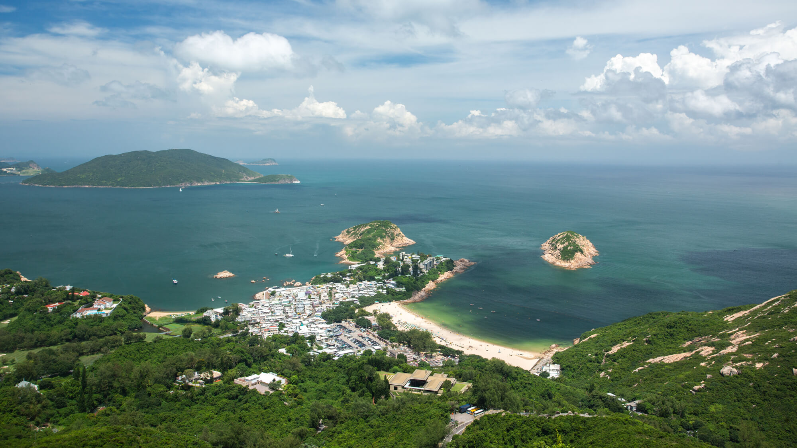
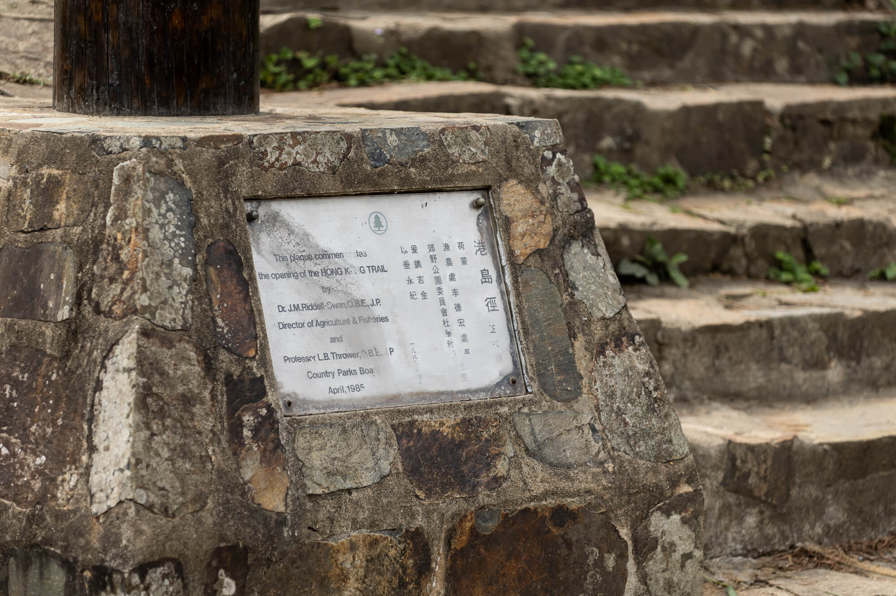
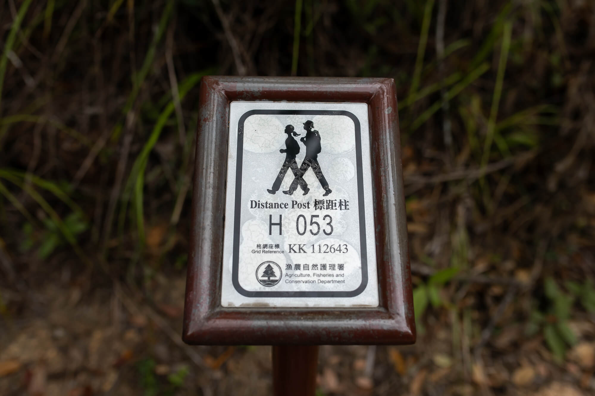
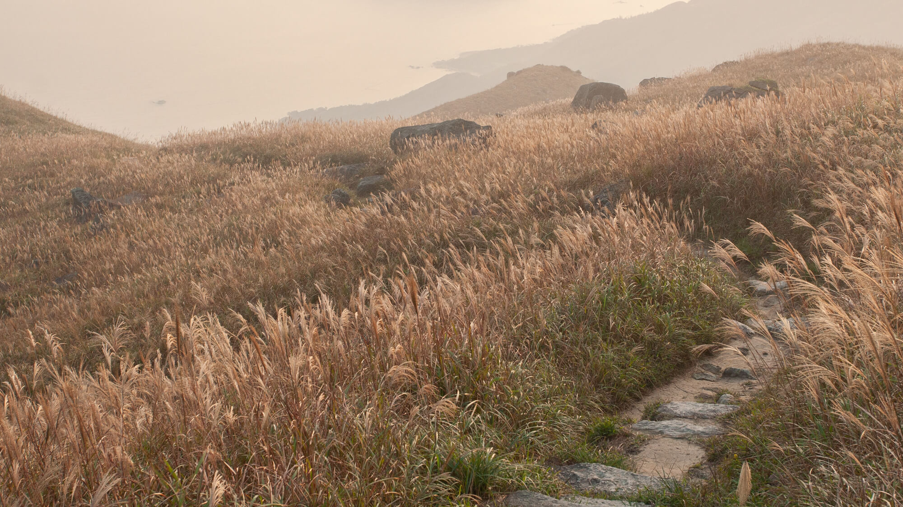
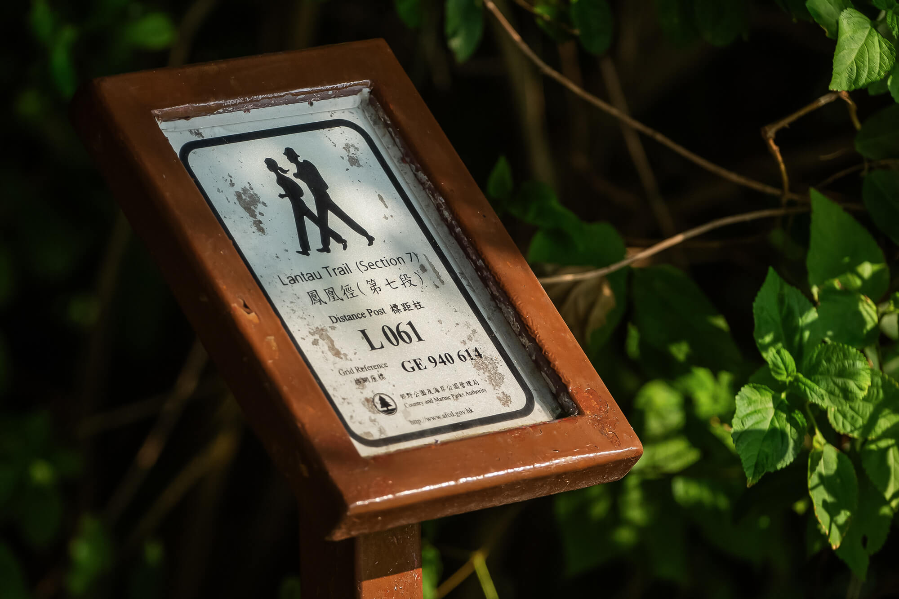
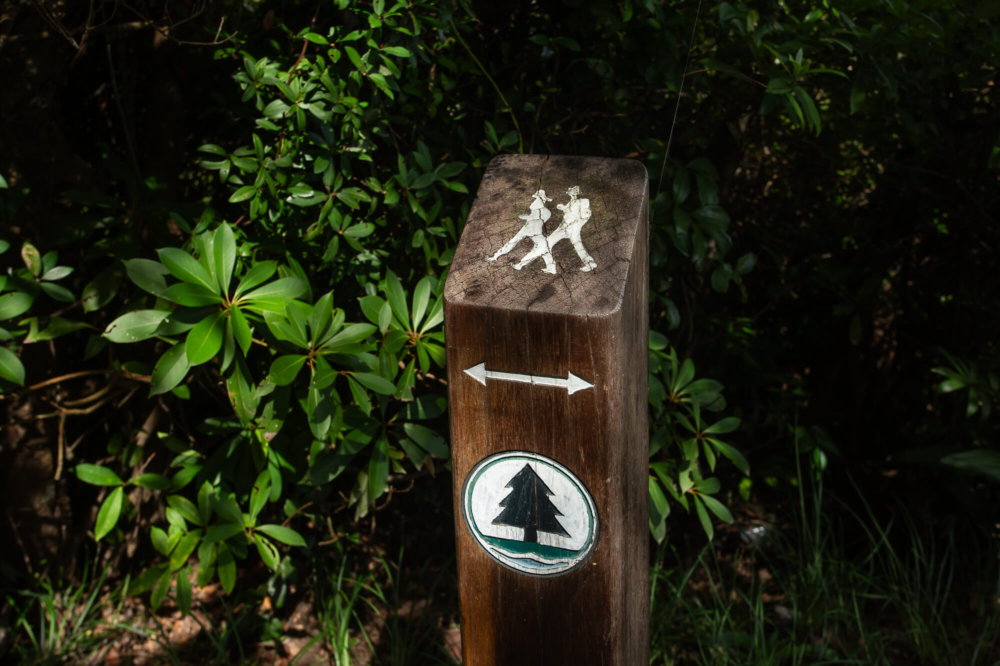

行山路缐介紹



港島徑
- 港島徑是本港第三條長途遠足徑，位於香港島，於1985年4月啟用。
- 港島徑共分為八段，全長約50km，是本港路程最短的長途遠足徑。路線主要由香港島西部的山頂至東部近石澳的大浪灣。
- 港島徑的起點在著名的旅遊點─ ─山頂。第一段路線的初段會沿著太平山（「扯旗山」）的山腹行走，
- 下降至薄扶林水塘；第二與第三段會先經過貝璐道，後繞行奇力山及田灣山的山腰再走至灣仔峽；其後一段繞過金馬倫山約240米的山腹，經過中峽走至黃泥涌峽。
- 港島徑第五段與衛奕信徑第二段的路線初段相互重疊，這段路先後登上400米高的渣甸山及畢拿山，再循梯級陡降至大風坳；繼後一段則沿著寬闊的柏架山道下走，賞覽逾一百年歷史的大潭水塘後，
- 便會抵達大潭道；第七段的路徑較為平緩，主要沿著引水道行走，繞經石碑山至土地灣；港島徑末段縱走世界知名的行山地點龍脊，繞經砵甸乍山，最後再輕降至終點大浪灣。
- 港島徑的部分路段為引水道及車路，較為沉悶；但也有不少路段是林蔭下的泥徑，令人彷如置身原始森林中。
- 此徑各路段的支徑及退出點極多，但沿途都有指示。港島徑遊走於繁華都市旁的郊野，對比強烈，是一道獨特的長途遠足徑。



鳳凰徑
- 鳳凰徑位於香港最大的島嶼大嶼山，以島上的最高峰鳳凰山命名，於1984年啟用。此遠足徑全長約70km，共分為十二段。路線主要圍繞南大嶼郊野公園而行走，由東部的梅窩起，繞行西面海岸返回梅窩。
- 鳳凰徑為一環型行山路線，其起點和終點均在梅窩碼頭。第一段沿車道上升至南山；第二段攀越島上高峻的大山如二東山與大東山，再下降至伯公坳；第三段隨即攀上934米的鳳凰山，
- 下降屹立天壇大佛的昂平，再輕降至深屈道結束第四段；第五與第六段先要上攀至觀音山，踏進嶼西的群岳中，繼而走過古亭園龍仔悟園，再西降至大澳水鄉；隨後的三段鳳凰徑先會南下分流炮台，再沿著嶼南的海岸線,
- 經過狗嶺涌、石壁水塘再走到水口；走過第十及第十一段的引水道後，便會到達著名沙灘貝澳；鳳凰徑的最終段會經過白富田，再返回梅窩完結。
- 鳳凰徑除了二澳一段雜草叢生外，其餘路徑明確。途中攀山靠海，自然風光滿溢，沒有高樓阻礙景觀。
- 此外，途中更可訪尋古蹟和了解漁村文化，是一道不可多得的長途遠足徑。